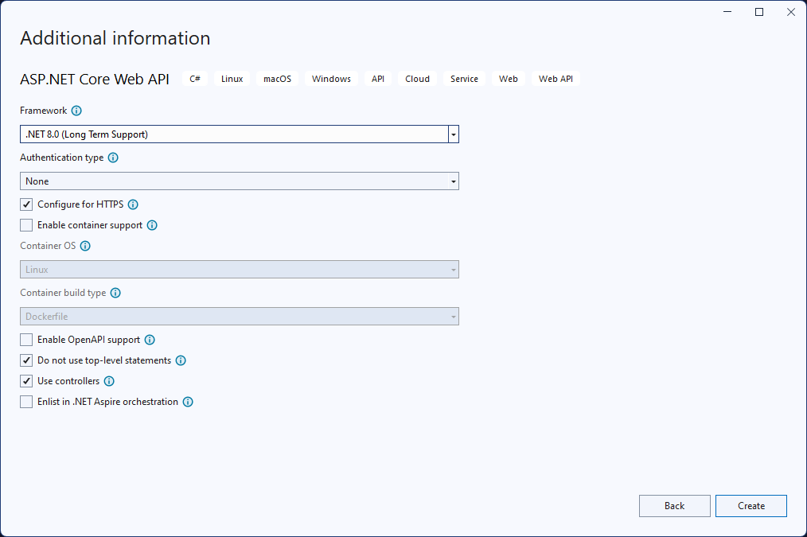
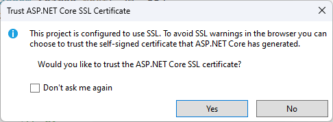
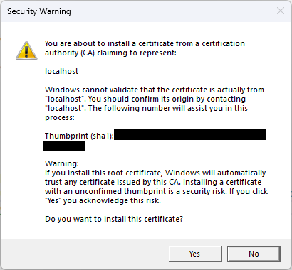
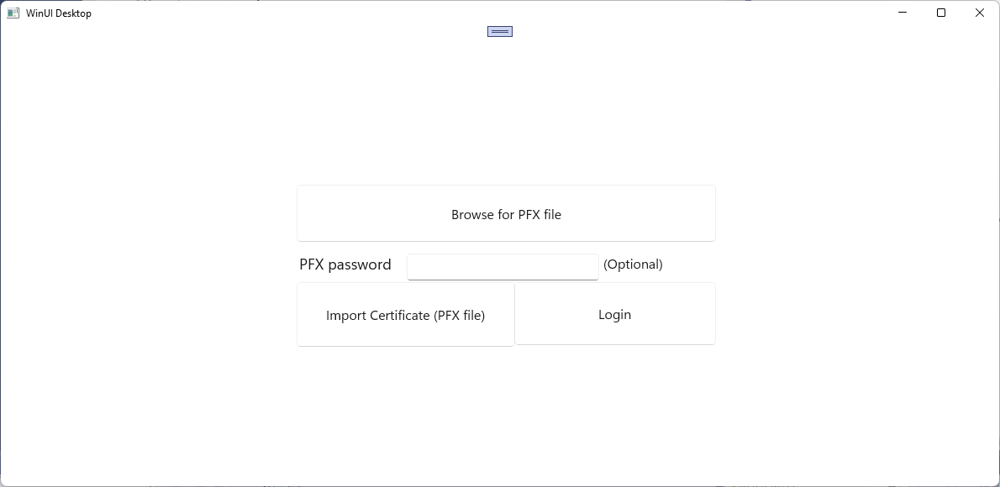

Share certificates between Windows apps
Windows apps that require secure authentication beyond a user Id and password combination can use certificates for authentication. Certificate authentication provides a high level of trust when authenticating a user. In some cases, a group of services will want to authenticate a user for multiple apps. This article shows how you can authenticate multiple Windows apps using the same certificate, and how you can provide a method for users to import a certificate that was provided for access to secured web services.
Apps can authenticate to a web service using a certificate, and multiple apps can use a single certificate from the certificate store to authenticate the same user. If a certificate does not exist in the store, you can add code to your app to import a certificate from a PFX file. The client app in this quickstart is a WinUI app, and the web service is an ASP.NET Core web API.
Tip
Microsoft Copilot is a great resource if you have questions about getting started writing Windows apps or ASP.NET Core web APIs. Copilot can help you write code, find examples, and learn more about best practices for creating secure apps.
Prerequisites
- Visual Studio with the ASP.NET and web development and WinUI application development workloads installed.
- The latest Windows Software Development Kit (SDK) to use the Windows Runtime (WinRT) APIs in your WinUI app.
- PowerShell for working with self-signed certificates.
Create and publish a secured web service
Open Microsoft Visual Studio and select Create a new project from the start screen.
In the Create a new project dialog, select API in the Select a project type dropdown list to filter the available project templates.
Select the ASP.NET Core Web API template and select Next.
Name the application "FirstContosoBank" and select Next.
Choose .NET 8.0 or later as the Framework, set the Authentication type to None, ensure Configure for HTTPS is checked, uncheck Enable OpenAPI support, check Do not use top-level statements and Use controllers, and select Create.

Right-click the WeatherForecastController.cs file in the Controllers folder and select Rename. Change the name to BankController.cs and let Visual Studio rename the class and all references to the class.
In the launchSettings.json file, change the value of "launchUrl" from "weatherforecast" to "bank" for all three configuration what use the value.
In the BankController.cs file, add following "Login" method.
[HttpGet] [Route("login")] public string Login() { // Return any value you like here. // The client is just looking for a 200 OK response. return "true"; }Open the NuGet Package Manager and search for and install latest stable version of the Microsoft.AspNetCore.Authentication.Certificate package. This package provides middleware for certificate authentication in ASP.NET Core.
Add a new class to the project named SecureCertificateValidationService. Add the following code to the class to configure the certificate authentication middleware.
using System.Security.Cryptography.X509Certificates; public class SecureCertificateValidationService { public bool ValidateCertificate(X509Certificate2 clientCertificate) { // Values are hard-coded for this example. // You should load your valid thumbprints from a secure location. string[] allowedThumbprints = { "YOUR_CERTIFICATE_THUMBPRINT_1", "YOUR_CERTIFICATE_THUMBPRINT_2" }; if (allowedThumbprints.Contains(clientCertificate.Thumbprint)) { return true; } } }Open Program.cs and replace the code in the Main method with the following code:
public static void Main(string[] args) { var builder = WebApplication.CreateBuilder(args); // Add our certificate validation service to the DI container. builder.Services.AddTransient<SecureCertificateValidationService>(); builder.Services.Configure<KestrelServerOptions>(options => { // Configure Kestrel to require a client certificate. options.ConfigureHttpsDefaults(options => { options.ClientCertificateMode = ClientCertificateMode.RequireCertificate; options.AllowAnyClientCertificate(); }); }); builder.Services.AddControllers(); // Add certificate authentication middleware. builder.Services.AddAuthentication( CertificateAuthenticationDefaults.AuthenticationScheme) .AddCertificate(options => { options.AllowedCertificateTypes = CertificateTypes.SelfSigned; options.Events = new CertificateAuthenticationEvents { // Validate the certificate with the validation service. OnCertificateValidated = context => { var validationService = context.HttpContext.RequestServices.GetService<SecureCertificateValidationService>(); if (validationService.ValidateCertificate(context.ClientCertificate)) { context.Success(); } else { context.Fail("Invalid certificate"); } return Task.CompletedTask; }, OnAuthenticationFailed = context => { context.Fail("Invalid certificate"); return Task.CompletedTask; } }; }); var app = builder.Build(); // Add authentication/authorization middleware. app.UseHttpsRedirection(); app.UseAuthentication(); app.UseAuthorization(); app.MapControllers(); app.Run(); }The code above configures the Kestrel server to require a client certificate and adds the certificate authentication middleware to the app. The middleware validates the client certificate using the
SecureCertificateValidationServiceclass. TheOnCertificateValidatedevent is called when a certificate is validated. If the certificate is valid, the event calls theSuccessmethod. If the certificate is invalid, the event calls theFailmethod with an error message, which will be returned to the client.Start debugging the project to launch the web service. You may receive messages about trusting and installing an SSL certificate. Click Yes for each of these messages to trust the certificate and continue debugging the project.


The web service will be available at
https://localhost:7072/bank. You can test the web service by opening a web browser and entering the web address. You will see the generated weather forecast data formatted as JSON. Keep the web service running while you create the client app.
For more information on working with ASP.NET Core controller-based web APIs, see Create a web API with ASP.NET Core.
Create a WinUI app that uses certificate authentication
Now that you have one or more secured web services, your apps can use certificates to authenticate to those web services. When you make a request to an authenticated web service using the HttpClient object from the WinRT APIs, the initial request will not contain a client certificate. The authenticated web service will respond with a request for client authentication. When this occurs, the Windows client will automatically query the certificate store for available client certificates. Your user can select from these certificates to authenticate to the web service. Some certificates are password protected, so you will need to provide the user with a way to input the password for a certificate.
Note
There are no Windows App SDK APIs for managing certificates yet. You must use the WinRT APIs to manage certificates in your app. We will also be using WinRT storage APIs to import a certificate from a PFX file. Many WinRT APIs can be used by any Windows app with package identity, including WinUI apps.
The HTTP client code we'll implement uses .NET's HttpClient. The HttpClient included in the WinRT APIs doesn't support client certificates.
If there are no client certificates available, then the user will need to add a certificate to the certificate store. You can include code in your app that enables a user to select a PFX file that contains a client certificate and then import that certificate into the client certificate store.
Tip
You can use the PowerShell cmdlets New-SelfSignedCertificate and Export-PfxCertificate to create a self-signed certificate and export it to a PFX file to use with this quickstart. For information, see New-SelfSignedCertificate and Export-PfxCertificate.
Note that when generating the certificate, you should save the thumbprint of the certificate to use in the web service for validation.
Open Visual Studio and create a new WinUI project from the start page. Name the new project "FirstContosoBankApp". Click Create to create the new project.
In the MainWindow.xaml file, add the following XAML to a Grid element, replacing the existing StackPanel element and its contents. This XAML includes a button to browse for a PFX file to import, a text box to enter a password for a password-protected PFX file, a button to import a selected PFX file, a button to log in to the secured web service, and a text block to display the status of the current action.
<Button x:Name="Import" Content="Import Certificate (PFX file)" HorizontalAlignment="Left" Margin="352,305,0,0" VerticalAlignment="Top" Height="77" Width="260" Click="Import_Click" FontSize="16"/> <Button x:Name="Login" Content="Login" HorizontalAlignment="Left" Margin="611,305,0,0" VerticalAlignment="Top" Height="75" Width="240" Click="Login_Click" FontSize="16"/> <TextBlock x:Name="Result" HorizontalAlignment="Left" Margin="355,398,0,0" TextWrapping="Wrap" VerticalAlignment="Top" Height="153" Width="560"/> <PasswordBox x:Name="PfxPassword" HorizontalAlignment="Left" Margin="483,271,0,0" VerticalAlignment="Top" Width="229"/> <TextBlock HorizontalAlignment="Left" Margin="355,271,0,0" TextWrapping="Wrap" Text="PFX password" VerticalAlignment="Top" FontSize="18" Height="32" Width="123"/> <Button x:Name="Browse" Content="Browse for PFX file" HorizontalAlignment="Left" Margin="352,189,0,0" VerticalAlignment="Top" Click="Browse_Click" Width="499" Height="68" FontSize="16"/> <TextBlock HorizontalAlignment="Left" Margin="717,271,0,0" TextWrapping="Wrap" Text="(Optional)" VerticalAlignment="Top" Height="32" Width="83" FontSize="16"/>Save the MainWindow changes.
Open the MainWindow.xaml.cs file, and add the following
usingstatements.using System; using System.Security.Cryptography.X509Certificates; using System.Diagnostics; using System.Net.Http; using System.Net; using System.Text; using Microsoft.UI.Xaml; using Windows.Security.Cryptography.Certificates; using Windows.Storage.Pickers; using Windows.Storage; using Windows.Storage.Streams;In the MainWindow.xaml.cs file, add the following variables to the MainWindow class. They specify the address for the secured login service endpoint of your "FirstContosoBank" web service, and a global variable that holds a PFX certificate to import into the certificate store. Update the
<server-name>tolocalhost:7072or whichever port is specified in the "https" configuration in your API project's launchSettings.json file.private Uri requestUri = new Uri("https://<server-name>/bank/login"); private string pfxCert = null;In the MainWindow.xaml.cs file, add the following click handler for the login button and method to access the secured web service.
private void Login_Click(object sender, RoutedEventArgs e) { MakeHttpsCall(); } private async void MakeHttpsCall() { var result = new StringBuilder("Login "); // Load the certificate var certificate = new X509Certificate2(Convert.FromBase64String(pfxCert), PfxPassword.Password); // Create HttpClientHandler and add the certificate var handler = new HttpClientHandler(); handler.ClientCertificates.Add(certificate); handler.ClientCertificateOptions = ClientCertificateOption.Automatic; // Create HttpClient with the handler var client = new HttpClient(handler); try { // Make a request var response = await client.GetAsync(requestUri); if (response.StatusCode == HttpStatusCode.OK) { result.Append("successful"); } else { result = result.Append("failed with "); result = result.Append(response.StatusCode); } } catch (Exception ex) { result = result.Append("failed with "); result = result.Append(ex.Message); } Result.Text = result.ToString(); }Next, add the following click handlers for the button to browse for a PFX file and the button to import a selected PFX file into the certificate store.
private async void Import_Click(object sender, RoutedEventArgs e) { try { Result.Text = "Importing selected certificate into user certificate store...."; await CertificateEnrollmentManager.UserCertificateEnrollmentManager.ImportPfxDataAsync( pfxCert, PfxPassword.Password, ExportOption.Exportable, KeyProtectionLevel.NoConsent, InstallOptions.DeleteExpired, "Import Pfx"); Result.Text = "Certificate import succeeded"; } catch (Exception ex) { Result.Text = "Certificate import failed with " + ex.Message; } } private async void Browse_Click(object sender, RoutedEventArgs e) { var result = new StringBuilder("Pfx file selection "); var pfxFilePicker = new FileOpenPicker(); IntPtr hwnd = WinRT.Interop.WindowNative.GetWindowHandle(this); WinRT.Interop.InitializeWithWindow.Initialize(pfxFilePicker, hwnd); pfxFilePicker.FileTypeFilter.Add(".pfx"); pfxFilePicker.CommitButtonText = "Open"; try { StorageFile pfxFile = await pfxFilePicker.PickSingleFileAsync(); if (pfxFile != null) { IBuffer buffer = await FileIO.ReadBufferAsync(pfxFile); using (DataReader dataReader = DataReader.FromBuffer(buffer)) { byte[] bytes = new byte[buffer.Length]; dataReader.ReadBytes(bytes); pfxCert = System.Convert.ToBase64String(bytes); PfxPassword.Password = string.Empty; result.Append("succeeded"); } } else { result.Append("failed"); } } catch (Exception ex) { result.Append("failed with "); result.Append(ex.Message); ; } Result.Text = result.ToString(); }Open the Package.appxmanifest file and add the following capabilities to the Capabilities tab.
- EnterpriseAuthentication
- SharedUserCertificates
Run your app and log in to your secured web service as well as import a PFX file into the local certificate store.

You can use these steps to create multiple apps that use the same user certificate to access the same or different secured web services.